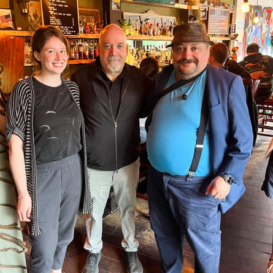
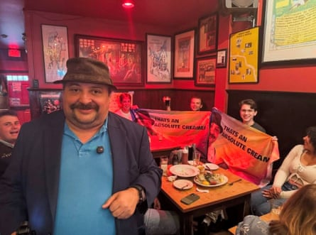

You might not be familiar with Prime Mutton. Maybe you haven’t heard his catchphrases – “absolute creamer”, “muttonista”, or the still-in-development “creamerisimo”.
If so, you’re missing out on a man who in the space of a year has created little short of a cult : an army of more than 160,000 social media fans, including celebrities, who cheer along online and in person as their leader – basically – reviews beer.
Prime Mutton, whose real name is Jason Hackett, isn’t the typical social media star. He is not, with all due respect, a beautiful twentysomething posting videos that are brightly lit with nice colors and snappy edits.
He’s a 55-year-old professional bridge player from Manchester, with a moustache, a leather pork pie hat, and a body that, he readily admits, reflects his enthusiasm for ale. The lighting in his videos is not up to professional standards, they are rife with background noise – he films the videos in bars – and his recent experiments with fonts and emojis have frequently been chaotic.
But what Prime Mutton does have is a passion: a passion for pints.
That devotion, coupled with his unvarnished persona and his “absolute creamer” catchphrase – uttered with relish when a beer meets his high standards – have been enough for him to succeed where so many Brits before him have not: he has cracked America.
“I think people, when I publish my little videos and posts, it brings them quite a lot of happiness,” Prime Mutton told the Guardian on a recent Sunday in Brooklyn.
“People, you know, wake up, they’re about to go to work, or they’re at work on their break, and it’s something that makes them happy – and it’s wholesome and authentic as well.”
Paul Giamatti with Prime Mutton.Photograph: Adam Gabbatt/The Guardian
Prime Mutton – “the brain in terms of knowledge of food and drink is prime; the body is mutton, in that I’m not exactly a honed, prime physical athletic specimen” – is on his first US tour, appearing in Boston, New York, Philadelphia and beyond. He has visited dozens of bars, drawing thousands of fans, many wearing T-shirts bearing his face or holding banners with the legend “absolute creamer”.
The in-person appearances, which Prime Mutton announces in advance on his Instagram, follow the same formula as his videos. Prime Mutton appears on camera standing in a bar, holding a pint of beer. He greets the visiting “muttonistas” – a term he coined for fans, and one which they have eagerly embraced, before announcing where he is, and which beer he is going to review.
Then the magic begins.
Sommeliers and cicerones advise that the best way to taste wine or beer is to swish it in the glass, sniff, sip, and swill it around in your mouth to really assess the flavors. Prime Mutton does not do this. Instead, he raises his pint and takes a gigantic swig, a full four or five gulps, until two-thirds of the beer is consumed. After coming up for air, he takes a few moments before delivering his verdict.
The gold standard, for Prime Mutton and his adherents, is that the beer is an “absolute creamer”. His delivery of the phrase, which he said he picked up on a visit to Ireland, sends crowds online and in person into ecstasy.
The Guardian met Prime Mutton at a bar close to where he was due to make his first appearance of the day. The idea was to have a private chat before he addressed the muttonistas. But nowhere is private for Prime Mutton these days.
As we talked, a man, in his 50s, balding, with a grey beard, spotted us through the window and began to wave, hopping up and down excitedly. The man was Paul Giamatti, Golden Globe and Emmy-winning, Oscar and Bafta-nominated actor.
From outside, Giamatti motioned for us to stay in place – the man really can act – and ran out of view. He quickly reappeared with his son and hustled into the bar. He was wearing a black polo shirt which said “Muttonista” above an image of Prime Mutton.
Giamatti introduced himself as Paul, and said his son had introduced him to Mutton’s Instagram channel. Rarely has a man looked happier. He asked if he could have a photo. “Of course,” said Prime Mutton – and one was taken. The two men chatted briefly before a beaming Giamatti left. I asked Prime Mutton if he knew who that was. He did not. I told him it was a famous actor.
“See, that’s not my world,” Prime Mutton said, but he did add that Giamatti “seemed very nice”.
Giamatti satiated, it was time for Prime Mutton to head to Hartley’s bar, where about 150 people had gathered in a pubdesigned to hold about 30 people. The majority of the crowd had to settle for a spot outside, some spilling over into the road. Mutton was here to sample the Guinness, which he had been told was among the best the city has to offer.
As we walked round the corner together, the crowd went wild. There was a primal roar, like people cheering a musician as they emerge at the Super Bowl. This was Mutton as a more conservatively dressed, somewhat heavier Kendrick Lamar – a rough and ready British interpretation of American celebrity.
Inside, an area had been spaced out for Prime Mutton to taste the bar’s Guinness. A hush went over the crowd as he was presented with a pint. He raised it to his lips and paused, a showman teasing his audience. Then he drank, gulp after gulp, as he drained more than two-thirds of the beer.
Prime Mutton set the glass down on the bar. He smacked his lips. Foam hung on his moustache. Tension hung in the air.
The crowd was now completely silent. Their entire focus was on this man, wearing a pork pie hat and suspenders, a man about to make days or crush dreams. Hairs on the backs of necks were raised. Which way would Caesar Mutton’s thumb point?
He paused, considering his decision.
“That’s good. It’s very good actually,” Prime Mutton said, but there was more. “However, I can’t say it’s the best pint I’ve had in New York.”
Hearts sank. His assessment wasn’t over, however.
“But it’s still so good,” Prime Mutton said, “that I’m going to call it an absolute creamer.”
Prime Mutton with fans.Photograph: Prime Mutton
An almighty cheer went up. People went wild. Men jumped up and down and hugged each other. High fives were exchanged between strangers. A woman nearly fell off a stool. The muttonistas, much like Prime Mutton’s thirst, had been sated.
“He’s completely endearing, and sort of what I need in my heart right now, given the state of the world,” said Nick Lucchesi, as Prime Mutton polished off the rest of his pint.
“I mean, look at him. He’s smiling and kind of quite Mancunian in all the best ways.”
Lucchesi had already seen Mutton once on this tour, but came back for more, cycling across Brooklyn to lend his support.
“He’s certainly a wonderful bloke. I just feel like: who doesn’t like a Guinness? And a nice guy dropping a catchphrase and talking about it? It makes you feel good,” he said.
Others echoed the sentiment. And at a time when male influencers are frequently awful, it’s true that Mutton offers something different from the rest. He’s not ordering young men to dunk their heads in ice at 3.50am. He’s not a misogynist , he’s not racist , he doesn’t belittle anyone, he’s basically … not a dickhead.
He’s just a man, a man who likes drinking beer, who likes making his videos, and likes bringing people joy.
At a time when a lot is wrong with society, when many of us have found ourselves searching for something real and grounded and normal , who wouldn’t want to be a muttonista?